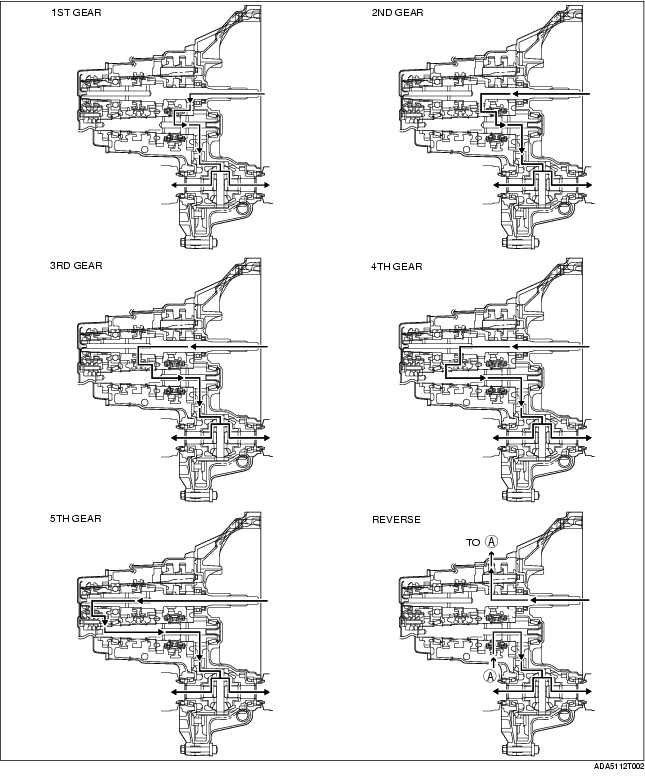

Mazda2
service manual
Search the manual
Home
Technical Guide
Transmission/transaxle
Manual transaxle
Manual transaxle power flow [F35M-R]
Manual transaxle power flow [F35M-R]

Previous
Manual transaxle cross-sectional view [F35M-R]
Next
Double cone synchronizer mechanism structure [F35M-R]